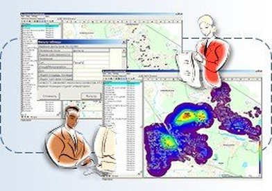

Анализ продаж
СИТИ-Маркет/ЭРМА СОФТ позволяет анализировать сбытовую деятельность предприятия с использованием геоинформационных технологий и картографической визуализации:
Накапливать числовые данные по объектам (оборот, сумма задолженности...) за отчётный период
Разбивать объекты на группы («успешно», «средне», «плохо») с помощью задания числовых ограничений
Создавать тематические многоцветные карты, отражающие объёмы продаж по заданным параметрам
Готовить картографические отчёты, сохраняя в электронном виде в файлах формата Excel

Параметрические запросы
СИТИ-Маркет/ЭРМА СОФТ поддерживает построение параметрических запросов к геоданным, значения которых выбираются в процессе выполнения созданных SQL-выражений.
Градиентная заливка
СИТИ-Маркет/ЭРМА СОФТ имеет функцию создания «градиентной заливки» для отображения данных, неравномерно распределённых на заданной территории — тепловые карты концентрации спроса и клиентской активности.
Ключевые функции
Управление торговыми представителями
Распределение клиентов между торговыми представителями
Распределение клиентов между торговыми представителями связано с:
Разбиением клиентов на группы и закреплением за торговыми представителями
«Ранжированием» клиентов в зависимости от объёмов продаж
СИТИ-Маркет/ЭРМА СОФТ позволяет вести базу данных «Зоны торговых представителей». Для каждого торгового представителя создаётся и отображается на карте «контролируемая» зона и входящие в неё клиенты.
Наличие «Зон торговых представителей» позволяет индексировать клиентскую базу данных — присваивать каждому клиенту номер зоны.
Планирование посещений клиентов
Планы посещения клиентов строятся с учётом групп (A, B, C, D,...), в которую попадает данный клиент. Планы готовятся на неделю / месяц с учётом цикличности посещения и создаются в виде отчётов в формате Excel.
Мониторинг выполнения заданий
Получение фактических данных о местоположении торговых представителей осуществляется от:
GPS-приёмников
Базовых станций операторов сотовой связи
Выполнение заданий контролируется программно-функциональным комплексом ПФК-Мониторинг/ЭРМА СОФТ:
Загрузка плановых маршрутов
Отображение запланированных маршрутов на интерактивной карте
Получение фактических данных
Обработка сообщений о местоположении от GPS и сотовых сетей
Анализ план/факт
Сопоставление плановых и фактических данных, подготовка отчётных документов

Ключевые функции
Анализ конкурентной среды
Мониторинг конкурентной среды
Решаемые задачи:
Объединение данных для визуального анализа местоположения объектов, принадлежности, объёмов продаж, ассортимента, ценовых параметров, фотографий объектов
Расширение клиентской сети с учётом транспортных и пассажиро-потоков, торговых точек
Система позволяет принимать обоснованные решения об открытии новых точек, перераспределении ресурсов и оптимизации логистики с учётом реального пространственного расположения объектов.
Поддерживается тематическая раскраска объектов по заданным параметрам, фильтрация по атрибутам, построение буферных зон и анализ транспортной доступности.
Ключевые функции
Вопрос специалисту ЭРМА СОФТ
Расскажите о задаче — подготовим демонстрацию и коммерческое предложение за 3 рабочих дня